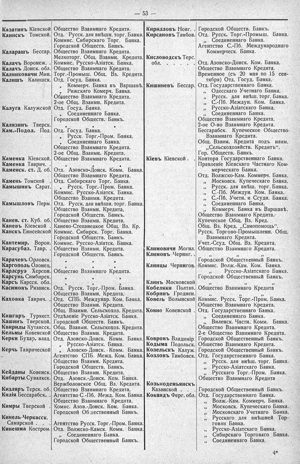

Лист источника 99
Скан

Распознанный текст
— 53 —
Казатинъ Кіевской Общество Взаимнаго Кредита.
Каинскъ Томской. Отд. Русск. для внѣшн. торг. Банка.
Коммис. Сибирскаго Торг. Банка.
Городской Обществ. Банкъ.
Каларашъ Бессар. Общество Взаимнаго Кредита.
Мелкоторг. Общ. Взаимн. Кредита.
Калачъ Воронеж. . Коммис. Русско-Азіатск. Банка.
Калачъ Донск. обл. Общество Взаимнаго Кредита.
Калинковичи Мин. Торг.-Промыш. Общ. Вз. Кредита.
Калишъ Калишск. Отд. Госуд. Банка.
„ Коммерч. Банка въ Варшавѣ.
„ Рижскаго Комерч. Банка.
Общество Взаимнаго Кредита.
2-ое Общ. Взаимн. Кредита.
Калуга Калужской Отд. Госуд. Банка.
„ Соединеннаго Банка.
Городской Обществ. Банкъ.
Калязинъ Тверск. „ „
Кам.-Подол. Под. Отд. Госуд. Банка.
„ Русск. Торг.-Пром. Банка.
„ Соединеннаго Банка.
Общество Взаимнаго Кредита.
2-ое Общ. Взаимн. Кредита.
Каменка Кіевской. Общество Взаимнаго Кредита.
Каменка Таврич. . „ „
Каменск. ст. Д. об. Отд. Азовско-Донск. Комм. Банка.
Общество Взаимнаго Кредита.
Камень Томской . Отд. Сибирскаго Торг. Банка.
Камышинъ Сарат. „ Русск. Торг.-Пром. Банка.
Коммис. Русско-Азіатск. Банка.
Общество Взаимн. Кредита.
Камышловъ Перм. Отд. Русск. для внѣшн. торг. Банка.
Общество Взаимн. Кредита.
Городской Обществ. Банкъ.
Канев. ст. Куб. об. Общество Взаимн. Кредита.
Каневъ Кіевской . Канево-Степанецкое Общ. Вз. Кр.
Канскъ Енисейской Коммис. Сибирск. Торг. Банка.
Городской Обществ. Банкъ.
Кантемир. Ворон. Коммис. Русско-Азіатск. Банка.
Карасубаз. Тавр. . Общество Взаимн. Кредита.
Городской Обществ. Банкъ.
Карачевъ Орловск. „ „ „
Каргополь Олонец. „ „ „
Карлсруэ Херсон. Общество Взаимнаго Кредита.
Карсунъ Симбирск. „ „ „
Карсъ Карсск. обл. „ „
Касимовъ Рязанск. Отд. Русск. Торг.-Пром. Банка.
Общество Взаимн. Кредита.
Каховка Таврич. . Отд. СПБ. Междунар. Ком. Банка.
Общество Взаимн. Кредита.
Общ. Взаимн. Сельскохоз. Кредита.
Кашгаръ Туркест. Отдѣленіе Русско-Азіатск. Банка.
Кашинъ Тверской. Городской Обществ. Банкъ.
Квирилы Кутаисск. Общ. Взаимн. Сельскохоз. Кредита.
Кельмы Ковенской Общество Взаимн. Кредита.
Керки Бухар. влад. Отд. Азовско-Донск. Комм. Банка.
„ Русско-Азіатск. Банка.
Керчь Таврической „ Азовско-Донск. Комм. Банка.
Агентство СПБ. Межд. Ком. Банка.
Общество Взаимн. Кредита.
Городской Обществ. Банкъ.
Кейданы Ковенск. Общество Взаимн. Кредита.
Кибарты Сувалкск. Отд. Азовск.-Донск. Ком. Банка.
Вержболовское Общ. Вз. Кредита.
Кизляръ Терск. об. Общество Взаимнаго Кредита.
Килія Бессарабск. . Агентство С.-Пб. Межд. Ком. Банка.
Общество Взаимнаго Кредита.
Кимры Тверской . Комис. Азов.-Донск. Ком. Банка.
Городской Общественный Банкъ.
Кинель-Черкасск.
Самарской . . . Агентство Русск. Торг.-Пром. Банка.
Кинешма Костром. Отд. Волжско-Камск. Комм. Банка.
„ Соединеннаго Банка.
Городской Общественный Банкъ.
Кирилловъ Новг. . Городской Обществ. Банкъ.
Кирсановъ Тамбов. Отд. Русск. Торг.-Промыш. Банка.
„ Соединеннаго Банка.
Агентство С.-Пб. Международнаго
Коммерческ. Банка.
Кисловодскъ Терс.
обл. . . . . . Отд. Азовско-Донск. Ком. Банка.
Общество Взаимнаго Кредита.
Временное (съ 20 мая по 15 сен-
тября) Отд. Госуд. Банка.
Кишиневъ Бессар. Отд. Государственнаго Банка.
„ Одесскаго Учетнаго Банка.
„ Русск. для внѣш. торг. Банка.
„ С.-Пб. Междун. Ком. Банка.
„ Русско-Азіатскаго Банка.
„ Соединеннаго Банка.
Общество Взаимнаго Кредита.
2-ое О-во Взаимнаго Кредита.
Бессарабск. Купеческое Общество
Взаимнаго Кредита.
Общ. Взаим. Кредита подъ наим.
„Сельскохозяйств. Кредитъ“.
Гор. Обществ. Банкъ.
Кіевъ Кіевской . Контора Государственнаго Банка.
Правленіе Кіевскаго Частнаго Ком-
мерческаго Банка.
Отд. Волжско-Кам. Коммерч. Банка.
„ Московск. Купеческаго Банка.
„ Русск. для внѣш. торг. Банка.
„ С.-Пб. Междун. Ком. Банка.
„ С.-Пб. Учетн. и Ссудн. Банка.
„ Соединеннаго Банка.
„ Коммерч. Банка въ Варшавѣ.
Общество Взаимнаго Кредита.
Купеческое Общ. Вз. Кред.
Общ. Вз. Кред. „Самопомощь“.
Русск. Торгово-Промышленн. Общ.
Взаимнаго Кредита.
Учет.-Ссуд. Общ. Вз. Кредита.
Климовичи Могил. Общество Взаимнаго Кредита.
Климовъ Черниг. . „ „
Городской Общественный Банкъ.
Клинцы Чернигов. Коммис. Волж.-Кам. Ком. Банка.
„ Русско-Азіатскаго Банка.
Городской Общественный Банкъ.
Клинъ Московской „ „ „
Кобеляки Полтав. Общество Взаимнаго Кредита
Кобринъ Гроднен. „ „
Ковель Волынской Коммис. Русск. Торг.-Пром. Банка.
Общество Взаимнаго Кредита.
Ковно Ковенской . Отд. Государственнаго Банка.
„ Соединеннаго Банка.
„ Виленск. Частн. Комм. Банка.
Общество Взаимнаго Кредита.
2-е Общество Взаимнаго Кредита.
Ковровъ Владимір. Городской Общественный Банкъ.
Кодыма Подольск. Общество Взаимнаго Кредита.
Козельскъ Калуж. Городской Общественный Банкъ.
Козловъ Тамбовск. Отд. Государственнаго Банка.
„ Русск. для внѣш. торг. Банка.
„ Русско-Азіатскаго Банка.
„ Русскаго Торг.-Пром. Банка.
Общество Взаимнаго Кредита
Козьмодемьянскъ
Казанской . . Городской Общественный Банкъ.
Кокандъ Ферг. обл. Отд. Государственнаго Банка.
„ Волж.-Кам. Коммерч. Банка.
„ Московск. Купеческаго Банка.
„ Московскаго Учетнаго Банка.
„ Русскаго для внѣшней Тор-
говли Банка.
„ Русско-Азіатскаго Банка.
„ Сибирскаго Торговаго Банка.
„ Соединеннаго Банка.
4*